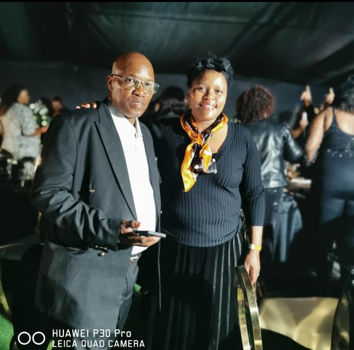
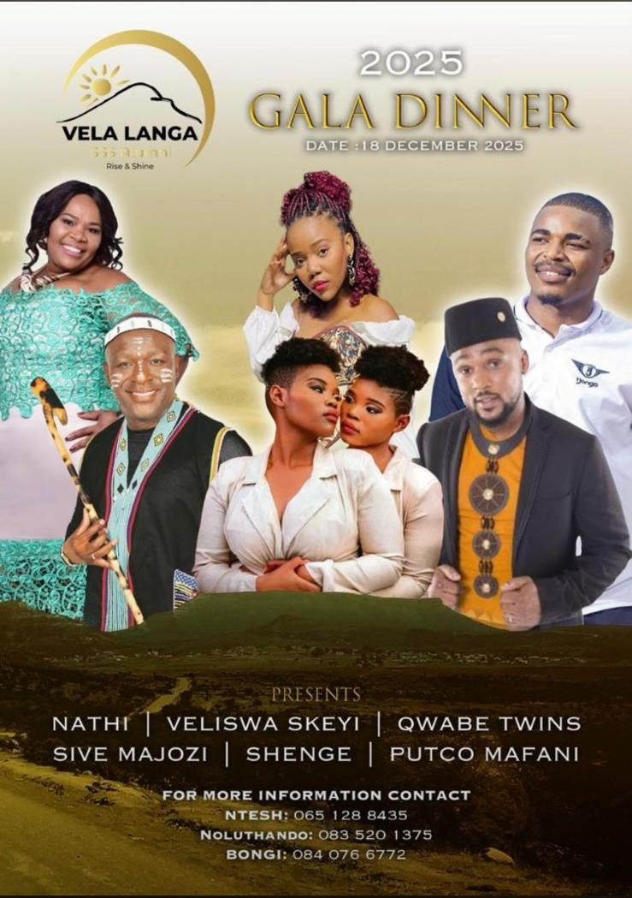
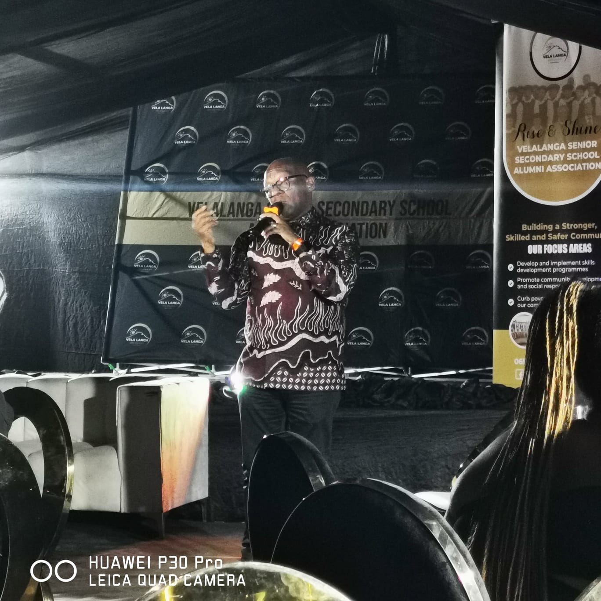
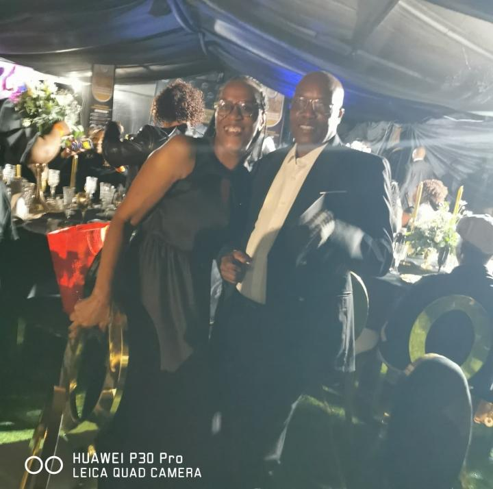
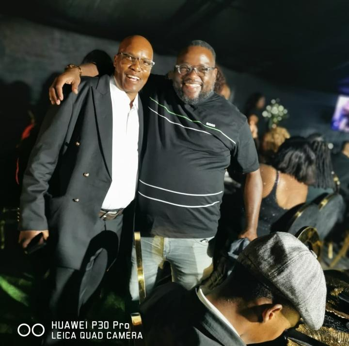
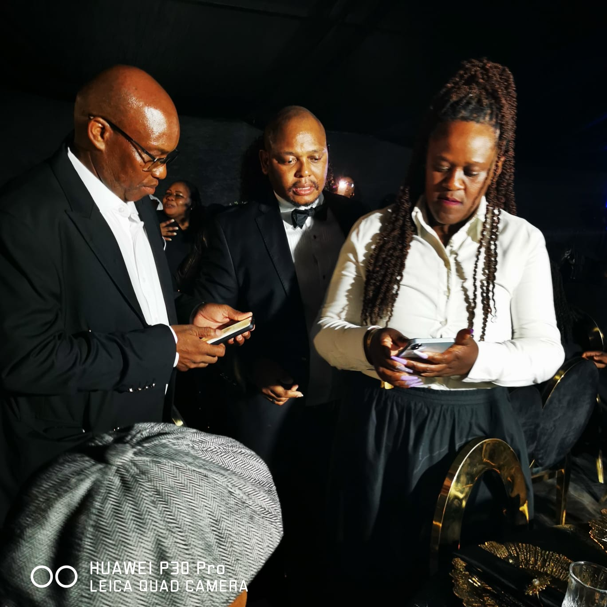
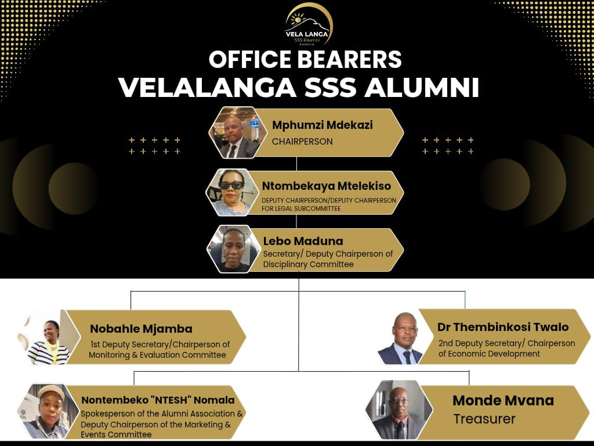
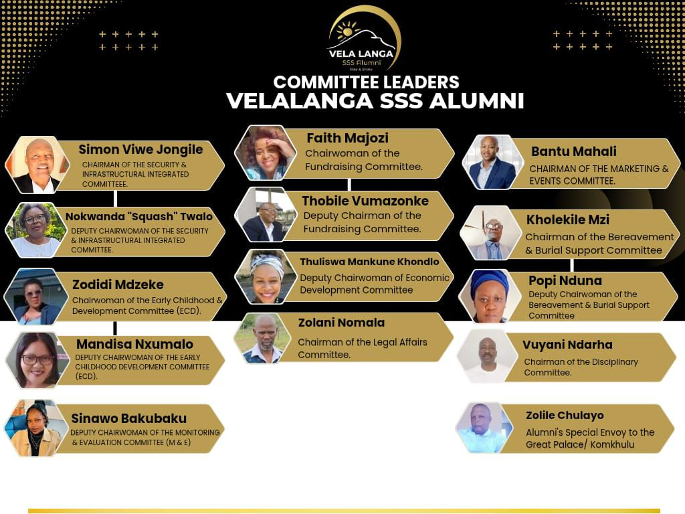

Vela Langa SSS Alumni Association
Office Bearers · Committees · Progress · Elections · Gala Highlights
Inaugural Celebration
The Vela Langa SSS Alumni Association launched in spectacular fashion on 18 December 2025 with a black-tie Gala Dinner — celebrating unity, heritage, and the rise of a proud alumni community. The evening brought together alumni from across the Eastern Cape and beyond, with world-class entertainment and heartfelt fellowship.
18 December 2025 · Black-Tie Gala






Executive Leadership

Subcommittee Structure

VSSS Progress Report · 30 March 2026
A preliminary draft proposal has been successfully submitted to WSU for a satellite campus at Velalanga (Lower Didimana). The Association is awaiting an invitation for a formal presentation and defence — format (physical or virtual) is yet to be confirmed.
A dedicated task team is making good progress with landowners regarding extra land needed for additional campus buildings. The team — comprising Zolile Chulayo, Nobahle Mjamba, Popi Nduna and Simon Jongile — will meet the legal team to draft a pre-contract for finalisation.
Meetings were successfully held with both Eskom and Sasol. Infrastructural and construction proposals have been submitted to both potential partners. Feedback is awaited, acknowledging some delay due to the timing of submissions.
SANRAL has reconnected and diary alignment with their CEO is underway, led by Simon Jongile. A tar-road proposal will be submitted as soon as a meeting can be secured and diaries synchronised.
A meeting with the NFSAS CEO yielded a positive commitment: NFSAS will fund every needy student who enrols at the satellite WSU campus at Velalanga, ensuring access to higher education for the community.
A VSSS delegation led by Simon Jongile met with the Sisulu family to notify them of plans to extend Walter Sisulu University's name to the satellite campus. The family fully endorsed the initiative and issued a written commitment letter, stating their support for rural education benefits.
Our delegation met with the Parliamentary Portfolio Committee Chairperson on Higher Education in Cape Town. He granted a full go-ahead and committed to arranging a meeting with the Minister of Higher Education — who may also assist with student accommodation construction through the Ministry.
Some committees — ECD, Economic Development and Bereavement & Burial Support — had not yet met with office bearers as of March 2026. MANCO is calling on all members to help persuade outstanding committees to engage. Legal Affairs agreed to meet on 27 March 2026, and the Fundraising Committee has begun connecting and holding preliminary meetings, with reinforcements added: Mxolisi Twalo, Zodidi Mdzeke, Mluleki Matiwane, Mandisa Nxumalo and Bongani Mfobela.
Alumni Quarterly Report · 15 May 2026
Administrative oversight by Ms Nobahle Mjamba. Members are requested to review their committee's plan and flag any inaccuracies or additions.
Alumni Asset
AN ALUMNI ASSET · VSSSA
MANCO resolved to establish a Task Team to develop the governance, structure and direction of the Choir. The Task Team consists of 6 members — 2 selected from each of the following committees: Marketing & Events, Security & Infrastructure Integrated, and Fundraising Committee.
The Task Team will oversee competition participation, manage indemnity agreements with parents of choir members, procure and brand attire/uniform, and coordinate the planned choir tour spearheaded by the Fundraising Committee Chairperson.
The Alumni Choir will participate in two prestigious competitions:
Democratic Renewal
The Secretariat will develop the guiding election document — covering process, rules, eligibility, dates and participation guidelines — and present it to the General Membership.
Transparency & Governance
Annual financial statements, income & expenditure, asset register, and Treasurer's report for the year ended 28 February 2025.
Constitutional framework, Board of Trustees charter, Executive Committee mandates, subcommittee terms of reference, and code of conduct.
17 July 2026 · 1st Anniversary Reflections
To our former Teachers and former SGB Members,
Members of Management Executive Committee (MANCO),
Alumni Members Friends and Colleagues,
Ladies and Gentlemen,
I bring you special greetings from the out-going interim leadership of Velalanga Alumni Association (VAA), on this momentous occasion of our 1st official Alumni Anniversary, the 17th July 2026.
This is to thank all of you, more-so the Almighty for being able to travel together under difficult circumstances.
Until now God has been with us (Ebenezer), kude kwalapha u Thixo enathi.
Today marks the 1st Velalanga Alumni Anniversary since we started last year on the 17th July 2025.
You may all be aware of the internal strides we made in attempting to lay a solid ground, and a firm foundation by constituting Committee Structures precisely to confront the socio-economic challenges that are facing our communities today.
The above Committees are our fighting machines to get us out of the socio-economic quagmire we find ourselves in today.
In the same year under review, we have managed to build crucial fraternal relationships which now exists between the Velalanga Alumni Association, Walter Sisulu University (WSU), Ikhala TVET College, Government Entities, Parliament and the Private Sector companies.
This is what is exciting about this journey, because it is full of potential opportunities and possibilities, despite the open skepticism from the doubting Thomases whose hearts were never part of this initiative, in spite of their pretentious presence from the onset amongst our ranks, something which is understandable and forgiven.
It is for this reason that, I would like to make a direct call and an open frank challenge to those with open skepticism and those who continue to bad mouth the Alumni, to please play their part and contribute in their own little corners and change the socio-economic conditions of our people, than the obsession to criticize those who are trying their best in getting our people out of unemployment, poverty and de-developmental trajectory.
This is by no means to suggest that we should be immunized and sanitized from criticism, but such should be constructive and meaningful with substance than lousy-empty rhetorics.
So, on behalf of the entire interim and outgoing leadership of Velalanga Alumni Association (VAA), please do accept our warm gratitude for being granted the privilege to serve and to have played our part in laying the foundation. We are grateful to have been entrusted with an opportunity and responsibility to serve. It was not our birth right to lead you, but a serious privilege, which we will never forget.
Despite its inherent minor challenges, this tenure has been good and educational so far; and because of that I must say, with polite and measured confidence we shall definitely overcome.
The face of Velalanga will ultimately change no matter how long it will take, but it will and must change as long as some of us are still alive. It will happen during our life time too and there is no doubt about that.
Further to this, it would have been remiss of me if I don't thank and acknowledge all former Principals, Parents and Teachers of this institution for their dedication, foresight and hard work, that have successively brought all of us together thus far. It is them who came before us who laid their hands to build and bequethed this Velalanga to us. A Velalanga that was destroyed by some "walking disasters".
History tells us that, this school was built by our parents, with their moneys. This should never escape our minds. Little did our parents anticipate that some "lost souls, and malcontents" who never built it, would come to destroy this precious educational asset (Velalanga).
In this context, a special mention in the reconstruction of the legacy of our forbearers goes to our enduring Pan Africanist Legendary English Teacher, Mr Cyril Muwonge, the Founding Patron of the Velalanga Alumni Association.
In the words of Isaac Newton, "if I have seen further, it is by standing on the shoulders of giants" and so the current generation is able to look into the future with much optimism, because we can stand on your shoulders as giants Mr Muwonge together with the founding parents and principals of our dear school. We are duly indebted to all the generations that came before us, especially those who were at the forefront of building this school in the mid 70s.
Ours is to make them proud during our lifetime through the reconstruction and building of a modern University Satellite Campus.
The Eastern Cape, our Province as a developing economy is faced with a lot of challenges in all sectors and that of education is no exception. Over the years, accessibility to higher education in the public institutions has been a challenge; lack of modern infrastructure including libraries and ICT facilities, lecture rooms, teaching and learning materials such as modern technological text books, studios, workshops and student accommodation, inadequate staff in terms of quality and quantity resulting in large class sizes with unfavourable student-teacher ratio, high staff turnover/staff exodus in some places, frequent industrial actions, challenging working environments and conditions of service, funding gaps, graduate unemployment, student ill-discipline and low female enrolment, among others.
In a large measure, many of these problems apply to both private and public academic institutions as well, but for whose effort to help bridge the gap would have made the critical situation of lack of accessibility, even worse.
Velalanga Alumni Association rises to be counted as an equal opposing force to these challenges in the Eastern Cape Province.
We rise to be counted as the 1st example to build a rural modern University Satellite Campus.
This is a commitment we are iron ringing ourselves with. It is our historical pledge. It is going to happen, doubting Thomases or no doubting Thomases, it is going to happen in our life time.
It shall happen and it must happen.
Of course this will make the running or management of our Alumni difficult somehow; requiring good and capable leadership with good hearts, with good and clean intentions, with well established administrative structures and skills, with lots of creativity and innovation.
For Velalanga Alumni in particular, a team that understands to a larger extent, the dynamics of the current educational landscape and terrain will be more important than ever before. We are going to be the 1st Rural Tertiary Education success story in the half a century. My emphasis.
From now onwards, we should exude ethical uprightness, and passion to serve and transform society. This is what we expect from the incoming new leadership once the election operation is concluded.
To all of you alumni members, you must be models and agencies of change you seek to achieve. I know it is not easy to maintain this feat without compromising on excellence and integrity as others are doing, but I know it is doable, its something all of us can do and should do.
This should make you unique and this you must squarely live up to.
I also want to charge the Committee Chairpersons and their Deputies, as Nehemiah charged the children of Israel, "Rise up and Build" for we are going in a new dispensation.
Please let us be true to ourselves and committed to the vision and heritage of our forefathers we are trying to rebuild and modernise.
This can only be achieved through team work. A good example of team work which always challenges me in the Holy Bible is that of the battle between the Israelites and the Amalekites at Rephidim (Exodus 17:8-14).
Joshua was asked to go into battle with his own select army whilst Moses went to the top of the Hill with the Rod of God in hand with Aaron and Hur.
When the going got tough in verse 12, they both held Moses' hands high till victory was achieved.
As I bring my speech to a close, we need to open the net a bit wider by establishing strategic enabling relationships with all the local stakeholder teams through our special envoy (Mr Zolile Chulayo), namely; the religious (church) entities, farmers, taxi industry, sport fraternity, local schools, traditional and cultural groups.
We must do all of this with the following question at the back of our minds ---what type of community and society do we seek to become in the near future?
In conclusion,
All of you as members of the Alumni, at least should know and appreciate at all times that the out-going interim leadership has been honestly solid behind every task and responsibility you gave them and we trust that the incoming elected and legitimate leadership will continue with the culture of ethical, sacrificial and selfless leadership.
Please keep your vision before you at all times (Habakkuk 2:2). Your vision is the road map for the work that still lies ahead. Happy 1st Anniversary.
God bless and keep you.
I thank you.